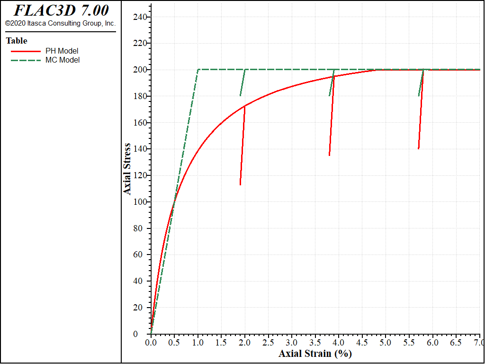

FLAC3D Theory and Background • Constitutive Models
Mohr-Coulomb 模型与塑性硬化模型的比较
注意
要在 FLAC3D 中查看此项目，请使用菜单命令 。 选择“ConstitutiveModels/ ComparisonPlasticHardening”并选择“ComparisonPlasticHardening.f3dprj”以加载。 该项目的主数据文件见本示例末尾（main data files）。
本示例比较了 塑性硬化（PH）模型（Plastic-Hardening (PH) model） 和 Mohr-Coulomb（MC）模型（Mohr-Coulomb (MC) model） 在三轴压缩中的行为。两个模型都用于 单网格单元三轴压缩试验，围压恒定为 100 kPa。两个模型的强度参数 （包括摩擦角、剪胀角和抗拉强度限值）相同。MC 模型采用 PH 模型的 \(E_{50}\) 刚度作为杨氏模量，并假定 \(E^{ref}_{ur}\) 为 \(E^{ref}_{50}\) 的三倍。 本示例的材料特性汇总于表 1（Table 1）。 表中未列出的材料参数为默认值。
| 参数 | PH | MC |
| \(\phi\) (degrees) | 30 | 30 |
| \(c\) (kPa) | 0 | 0 |
| \(\psi\) (degrees) | 10 | 10 |
| \(E^{ref}_{50}\) (kPa) | 2e4 | |
| \(E\) (kPa) | 2e4 | |
| \(\nu\) | 0.2 | 0.2 |
| \(E^{ref}_{ur}\) (kPa) | 6e4 | |
| \(m\) | 0.6 | |
| \(R_f\) | 0.9 | |
| \(p^{ref}\) (kPa) | 100 | |
| \(\sigma^{ini}_{1 \sim 3}\) (kPa) | -100 |
图 1（Figure 1）显示了 PH 和 MC 模型的偏应力与轴向应变关系图。从图中很容易验证以下几点：
- 两个模型的最终破坏偏应力（200 kPa）相同，符合预期。
- 在破坏前的曲线上，PH 模型和 MC 模型在破坏应力的一半（100 kPa）处相交，这与 \(E_{50}\) 刚度的概念一致。
- MC 模型中的卸载刚度与加载刚度相同（MC 模型中为 \(E\)，PH 模型中为 \(E_{50}\)），而在 PH 模型中这些刚度不同。


图 1：三轴压缩试验中 PH 与 MC 模型的比较。
数据文件
TriaxialCompressionPlasticHardening.dat
model new
model large-strain off
;
zone create brick size 1 1 1
zone cmodel assign plastic-hardening
zone property stiffness-50-reference=2.0e4 stiffness-ur-reference=6.0e4 ...
pressure-reference=100.0 exponent=0.6
zone property friction=30.0 dilation=10.0 cohesion=0.0
zone property stress-1-effective=-100.0 stress-2-effective=-100.0 ...
stress-3-effective=-100.0
;
zone gridpoint fix velocity-z
zone face apply stress-xx=-100.0 range union position-x 0 position-x 1
zone face apply stress-yy=-100.0 range union position-y 0 position-y 1
zone initialize stress xx -100.0 yy -100.0 zz -100.0
;
fish define hhhq_
local zp_ = zone.head
local gp_ = gp.find(8)
global hhhq_ = zone.stress.xx(zp_) - zone.stress.zz(zp_)
global hhha_ = -gp.disp.z(gp_)
end
history interval 10
fish history hhhq_
fish history hhha_
;
zone gridpoint initialize velocity-z -2e-6 range position-z 1
model step 10000
zone gridpoint initialize velocity-z 1e-6 range position-z 1
model step 1000
zone gridpoint initialize velocity-z -2e-6 range position-z 1
model step 10000
zone gridpoint initialize velocity-z 1e-6 range position-z 1
model step 1000
zone gridpoint initialize velocity-z -2e-6 range position-z 1
model step 10000
zone gridpoint initialize velocity-z 1e-6 range position-z 1
model step 1000
zone gridpoint initialize velocity-z -2e-6 range position-z 1
model step 20000
;
hist export '1' vs '2' table 'ph_qs_100'
table 'ph_qs_100' export 'ph_qs_100' truncate
;
model save 'ph100'
TriaxialCompressionMohrCoulomb.dat
model new
model large-strain off
;
zone create brick size 1 1 1
zone cmodel assign mohr-coulomb
zone property young=2.0e4 poisson=0.2 friction=30 dilation=10
;
zone gridpoint fix velocity-z
zone face apply stress-xx=-100.0 range union position-x 0 position-x 1
zone face apply stress-yy=-100.0 range union position-y 0 position-y 1
zone initialize stress xx -100.0 yy -100.0 zz -100.0
;
fish define hhhq_
local zp_ = zone.head
local gp_ = gp.find(8)
global hhhq_ = zone.stress.xx(zp_) - zone.stress.zz(zp_)
global hhha_ = -gp.disp.z(gp_)
end
history interval 10
fish history hhhq_
fish history hhha_
;
zone gridpoint initialize velocity-z -2e-6 range position-z 1
model step 10000
zone gridpoint initialize velocity-z 1e-6 range position-z 1
model step 1000
zone gridpoint initialize velocity-z -2e-6 range position-z 1
model step 10000
zone gridpoint initialize velocity-z 1e-6 range position-z 1
model step 1000
zone gridpoint initialize velocity-z -2e-6 range position-z 1
model step 10000
zone gridpoint initialize velocity-z 1e-6 range position-z 1
model step 1000
zone gridpoint initialize velocity-z -2e-6 range position-z 1
model step 20000
;
hist export '1' vs '2' table 'mc_qs_100'
table 'mc_qs_100' export 'mc_qs_100' truncate
;
model save 'mc100'
⇐ Drained Triaxial Compression Test with Simplified Cap-Yield (CHSoil) Model | Comparison of Plastic-Hardening Model without and with Small-Strain Stiffness ⇒
| 这些内容对您有帮助吗？… 版权与免责声明 | FLAC3D © 2019, Itasca | 原文更新于 2020 年 10 月 8 日 |